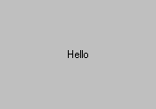

FillControl is just a "filler"; it doesn't display anything. It can be used to center or right / bottom allign other controls.
Within a HorzControl, Xstretch defaults to 1. Within a VertControl, Ystretch defaults to 1. Otherwise, both Xstretch and Ystretch default to 1.
For example, to center horizontally and vertically:
Window(#(Horz, Fill, (Vert, Fill, (Static "Hello"), Fill), Fill ))
Will display:
See also: SkipControl